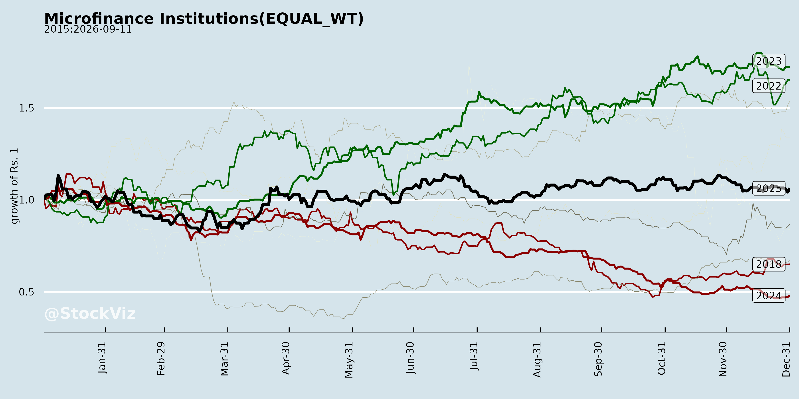
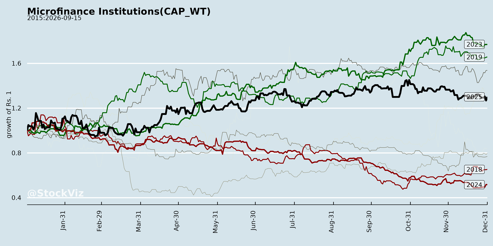
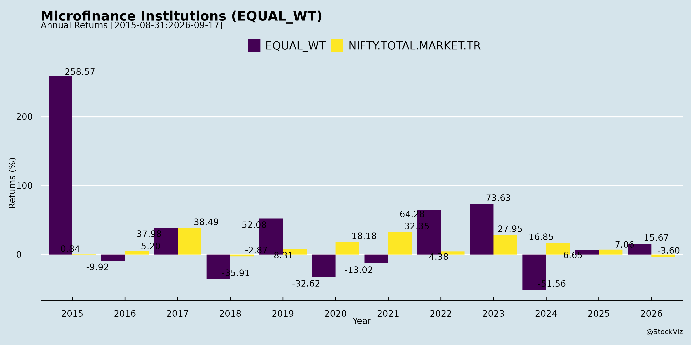
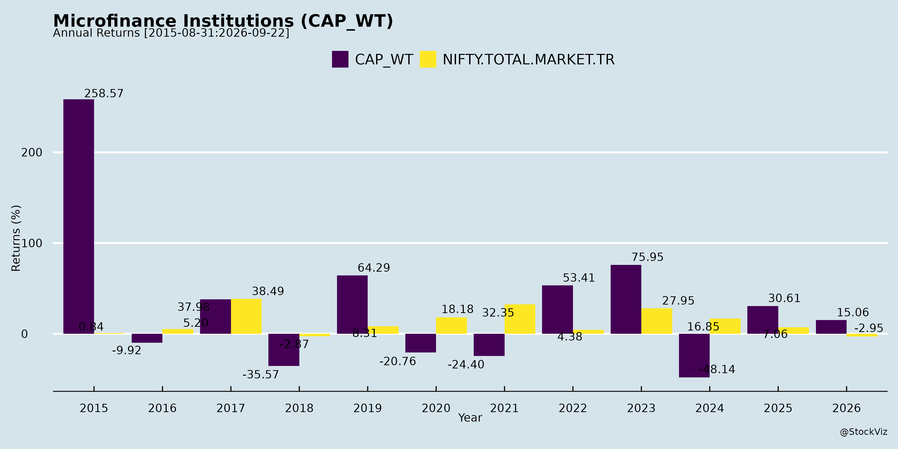
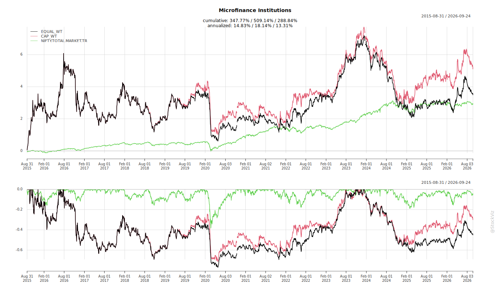
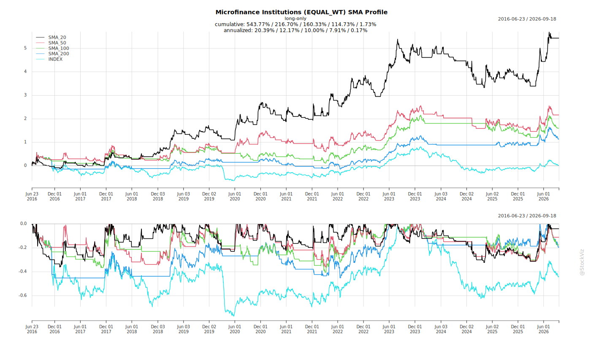
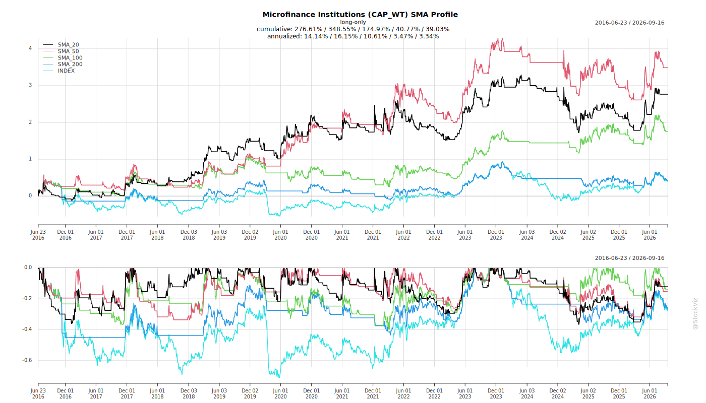
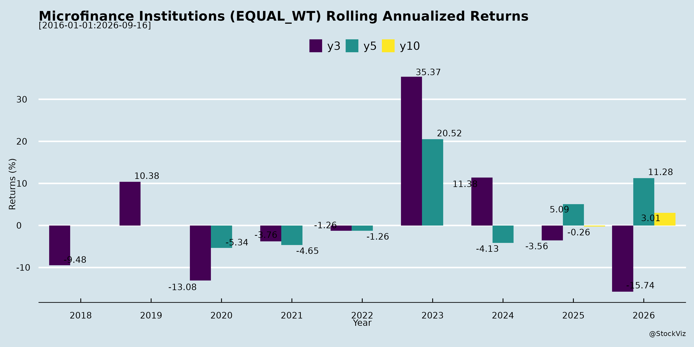
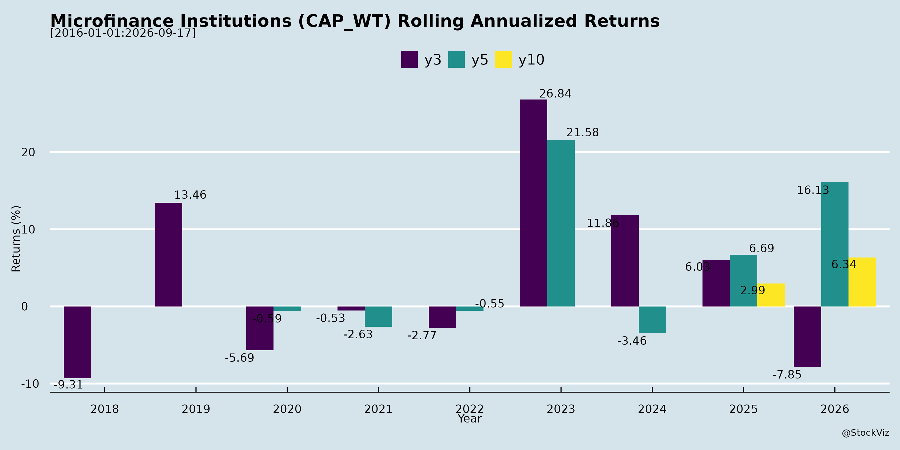

Annual Returns




Cumulative Returns and Drawdowns

SMA Scenarios


Current Distance from SMA
Rolling Returns


EBIT (% of Industry Total)
Revenue (% of Industry Total)
AI Summaries
Analyst
asof: 2025-12-01
Summary Analysis of Indian Microfinance Institutions (MFIs)
Based on Q2/H1 FY26 disclosures from CreditAccess Grameen, Muthoot Microfin, Spandana Sphoorty Financial (SSFL), Fusion Finance, and Satin Creditcare.
Headwinds (Challenges)
- Portfolio Stress & Delinquencies: Industry-wide over-leveraging led to elevated GNPA (e.g., SSFL: 5.62% GNPA, 1.17% NNPA; slippages Rs396cr in Q2). X-bucket collections improved but dipped slightly in Oct due to festivals, rains/floods.
- Slow Disbursement Recovery: Q1 FY26 disbursements muted (SSFL: Rs280cr); Q2 pickup (Rs934cr) but Oct lower. High rejection rates (65-80%) due to MFIN guardrails (e.g., 1-2 lender limits, zero/30 DPD filters).
- Financial Strain: Losses reported (SSFL: Rs249cr net loss, negative PPOP Rs40cr) from interest reversals, high provisions/write-offs (Rs86cr technical), and OPEX amid AUM contraction (SSFL: Rs4,088cr).
- Operational Adjustments: Branch closures/mergers (SSFL: 101 branches), elevated credit costs (2.5-3% expected FY27).
Tailwinds (Positive Factors)
- Improving Collections & Quality: X-bucket efficiency at 98.5-98.7% (Sep-Oct), up across states (e.g., Karnataka normalized; Bihar 98.8%). New FY26 book strong (0.1% delinquency, 99.9% collections).
- Recovery Momentum: Initiatives like demand/legal notices (90k/3.3L issued), Lok Adalat (8.6k cases), digital collections yielding Rs7.7cr recoveries since Aug.
- Liquidity & Capital Strength: High cash buffers (SSFL: 21% of assets, Rs1,270cr Oct-end), CRAR 47%, gearing 1.5x; debt raised Rs598cr. Rights issue closed successfully.
- Productivity Gains: Per LO disbursements up via tech (upfront bureau checks), weekly branches; NIM/yield improved (8.4%/19.6%).
- Active Investor Engagement: Multiple group meetings (e.g., CreditAccess Dec 3, Muthoot Dec 1, Satin Dec 4) signal confidence; no UPSI shared.
Growth Prospects
- Disbursement Ramp-Up: SSFL targets Rs500cr+ monthly (Q3), Rs700cr+ run-rate (Q4); FY26 new book at 37% of BS by Oct-end. Rs6,000cr opportunity from 10L existing customers (76% with ≤2 lenders).
- AUM Trajectory: SSFL expects sequential AUM growth from Q3 (flattish FY26 YoY); FY27 ~20% growth. New customer enrollment rising (22% of Q2 loans).
- Diversification: SSFL’s Criss Financial (Rs671cr AUM) shifting to secured Micro LAP (39% now, target 50-55%); industry macros (good monsoon) support rural demand.
- Sector Rebuild: Guardrails reducing leverage; potential CGFMU adoption for stable costs; yield expansion as new book grows.
Key Risks
- External Shocks: Floods (AP, Bihar, Odisha, WB), festivals/elections (Bihar), fewer working days impacting collections/disbursals.
- High Rejections & Acquisition: Stringent filters hinder new customers; over-reliance on existing base (43% unserved eligible).
- Credit Costs & Write-Offs: Forward flows to 90+ at ~Rs150cr/Q (down from Rs360cr); multi-lender book (17-23%) prone to delinquencies.
- State/Geography Variance: Laggards like AP (floods); unsecured segments stressed (e.g., SSFL Criss unsecured).
- Regulatory/Execution: MFIN guardrail persistence; covenant breaches possible if recovery slows; MD/CEO vacancy at SSFL (announcement in 30 days).
- Macro Sensitivity: Rural over-indebtedness relapse if macros weaken.
Overall Outlook: Sector in “rebuild” phase post-stress; tailwinds from collections/quality gaining traction outweigh headwinds. FY26 stabilization, FY27 growth resumption likely, but execution on disbursals/recoveries critical. Strong liquidity buffers mitigate near-term risks.
Financial
asof: 2025-11-29
Summary Analysis of Indian Microfinance Institutions (MFIs) from Provided Documents
The documents cover Q3/9M FY25 financial disclosures from key listed MFIs: CreditAccess Grameen (CAGL), Fusion Finance, Muthoot Microfin, Satin Creditcare, and Spandana Sphoorty. These reveal a sector under stress from asset quality issues but with operational resilience. Below is a structured analysis of headwinds, tailwinds, growth prospects, and key risks.
Headwinds (Key Challenges)
- Elevated Credit Costs and Asset Quality Deterioration:
- Sharp rise in impairment losses on financial instruments (ECL provisions): Muthoot (~₹1,642 Cr in Q3, up multi-fold YoY); Satin (~₹195 Cr standalone Q3, ₹412 Cr consolidated 9M); Fusion reports unquantified ECL retrospective adjustment issues.
- GNPA/NNPA trends worsening: Muthoot GNPA 3.03% (vs. 2.29% FY24), NNPA 0.34%; Satin GNPA 3.92%, NNPA 1.48%. Indicates rural/microloan stress (e.g., over-leveraging, monsoon/agri distress).
- Profitability Squeeze:
- PBT/PAT declines: Muthoot Q3 PBT ₹51 Cr (vs. ₹1,298 Cr YoY); Satin 9M PAT ₹165 Cr (down ~45% YoY); Fusion massive FY25 loss ₹1,225 Cr with qualified audit.
- High finance costs (Muthoot ~35% of revenue; Satin similar) amid elevated borrowings.
- Audit/Governance Concerns:
- Fusion: Qualified opinion (first-time FY25, repeated in H1) on Ind AS 8 impracticability for ECL restatements—unquantifiable impact erodes credibility.
- CAGL: Standalone/consolidated P&L alignment due to CSR subsidiary offsetting, but BS differences highlight consolidation nuances.
- Operational Pressures: High employee costs (Muthoot/Satin ~20% of expenses); loan derecognition losses (Muthoot ₹830 Cr Q3).
Tailwinds (Supportive Factors)
- Revenue Momentum:
- Strong top-line growth: Muthoot 9M revenue ₹20,067 Cr (+25% YoY); Satin 9M ₹181,368 lakhs (+24% YoY). Driven by interest income (Muthoot +30%) and fair value gains.
- Funding Access:
- Active NCD/bond issuances: Muthoot (₹664 Cr Q3); Satin (USD 7.5 Mn Oct’24); Spandana (₹50 Cr Oct’24). No deviations in use (all on-lending).
- Asset cover maintained (Muthoot exclusive charge ratio 1.00x); no defaults (Spandana confirms ₹6,253 Cr debt clean).
- Strong Capital Buffers:
- CRAR healthy: Muthoot 30.51%; Satin 27.40%. Net worth growth (Muthoot ₹30,090 Cr).
- Clean Audits (Mostly): Muthoot/Satin unmodified limited reviews; CAGL routine clarification.
Growth Prospects
- Portfolio Expansion via Transfers: Active de-risking supports re-lending.
- Muthoot: 9M DA transfers ₹12,952 Cr (323K accounts); ARC sales ₹4,947 Cr stressed loans.
- Satin: Q3 DA transfers ₹996 Cr (304K accounts); acquisitions ₹7.5 Cr.
- Enables AUM recycling amid 15-20% sector growth potential (rural credit gap).
- Diversification: Satin Housing Fin investment (₹350 Cr rights issue); Muthoot IPO utilization complete.
- Sector Tailwinds: RBI scale-based regulations (Middle Layer compliance); NIM stable (Muthoot/Satin ~12-13%); LCR >100% (Satin 115%).
- Outlook: 9M EPS (Muthoot ₹10.48; Satin ₹15.96) signals recovery if impairments peak. AUM growth 20-25% FY25 feasible with monsoon normalization.
Key Risks
| Credit/Asset Quality |
Rural distress driving Stage 3 ECL; NNPA >1% in Satin/Muthoot. Fusion ECL non-compliance. |
High |
Loan sales to ARC/DA; PCR 62% (Satin). |
| Profitability/Volatility |
Impairment/finance costs >50% expenses; PBT volatility (Muthoot -96% Q3 YoY). |
High |
Revenue diversification (fees/FV gains). |
| Regulatory/Compliance |
RBI ECL norms, transfer guidelines; SEBI LODR scrutiny (qualified reports). |
Medium |
Full disclosures; no deviations/defaults. |
| Liquidity/Funding |
Debt:Equity 2.7-3.3x; refinance dependency (borrowings ~70% assets). |
Medium |
Strong CRAR; NCD access. |
| Governance/Audit |
Fusion qualified opinion; auditor changes (Satin). |
High (Fusion-specific) |
Unquantified; monitor restatements. |
| Operational |
Employee costs up 20-30% YoY; single-segment exposure (financing). |
Low-Medium |
No subsidiaries in most (Muthoot standalone). |
Overall Sector View: Indian MFIs face headwinds from asset quality stress (post-COVID rural over-indebtedness), capping near-term profitability (sector ROE ~10-15%). However, tailwinds from funding access and revenue growth position them for 15-20% AUM expansion FY26 if ECL stabilizes. Fusion highest risk (avoid); Muthoot/Satin/CAGL resilient leaders. Monitor Q4 impairments and monsoon FY26 for inflection.
General
asof: 2025-11-29
Summary Analysis of Indian Microfinance Institutions (MFIs)
Based on the provided documents from CreditAccess Grameen (CAG), Fusion Finance, Muthoot Microfin, Satin Creditcare/Satin Finserv, and Spandana Sphoorty (SSFL), the Indian MFI sector shows resilient growth amid improving asset quality, but faces regional stress and operational challenges. CAG’s update dominates with detailed metrics (Q2 FY26/H1 FY26), while others highlight capital raises and governance changes. Key themes reflect post-monsoon recovery, expansion, and funding efforts.
Tailwinds (Positive Drivers)
- Strong Disbursement Momentum: CAG reported 33% YoY growth in Q2 FY26 disbursements (₹5,331 Cr) and 27% in H1, despite seasonal Q2 weakness. Robust demand in rural/semi-urban areas.
- Improving Asset Quality: CAG’s PAR metrics stabilized/improved (PAR0+ down to 4.7% from 5.9%; PAR90+ to 2.5% from 3.3%; excl. Karnataka: PAR0+ at 3.8%). PAR15+ accretion range-bound but expected to improve post-floods.
- Network Expansion: CAG added 150 branches (96 in Q2) and ~4.4 lakh borrowers in H1; employee base up to 21,701. Supports scalable growth.
- Capital Access: Fusion’s rights call (₹65.50/share, due Dec 11, 2025); Satin Finserv’s 2.08 Cr rights equity shares; SSFL’s ₹4,000 Cr NCD private placement approval. Bolsters liquidity for lending.
- Governance Stability: SSFL re-appointed key directors (e.g., Ramachandra Kamath, Neeraj Swaroop); CAG’s “Great Place to Work” certification signals operational strength.
Headwinds (Challenges)
- Asset Quality Stress in Key States: CAG’s Karnataka PAR remains elevated (PAR0+: 5.1% PAR90+ in Sep-25 vs. national 2.5%; historically higher at 9.2%). Bihar/TN also lag (PAR90+: 5.2%/3.4%).
- GLP Contraction & Write-offs: CAG GLP dipped to ₹25,904 Cr (Sep-25) from ₹26,055 Cr (Jun-25) due to ₹683 Cr write-offs (incl. accelerated).
- External Disruptions: Heavy rains/floods temporarily elevated PAR15+ accretion; seasonal Q2 softness noted.
- Leadership Transitions: Satin Finserv’s CEO Dhiraj Jha resignation (personal reasons, eff. Nov 30, 2025); Pramod Marar elevated to lead all business (Green/non-Green/SME).
- Trading/Compliance Disruptions: Fusion’s partly paid shares suspended (Nov 11, 2025); forfeiture risk if calls unpaid (10% p.a. interest).
Growth Prospects
- High (20-30%+ YoY Disbursements): CAG’s momentum (H1 growth) + branch/borrower additions position for 25-35% AUM expansion in FY26, aided by capital raises (rights/NCDs ~₹4,000-6,000 Cr sector-wide).
- Geographic Diversification: CAG’s “Other States” GLP stable/growing (₹18,004 Cr); Satin’s SME/Green finance push; SSFL’s NCDs for scaling.
- Recovery Trajectory: Post-flood PAR improvement expected; ALM filings (Muthoot) indicate liquidity management for sustained lending.
- Sector Tailwinds: Rural credit demand, digital collections, and regulatory support (SEBI LODR compliance) favor 15-20% sector AUM CAGR through FY27.
Key Risks
| Credit/Asset Quality |
Regional stress (Karnataka/Bihar floods); PAR90+ at 2.5-5% could rise if monsoons/economy weaken. Write-offs erode margins. |
Monitoring (monthly PAR trends); diversification excl. high-risk states. |
| Liquidity/Funding |
Rights call forfeiture (Fusion); partly paid trading halt delays full conversion. High funding costs amid rate hikes. |
Capital raises underway; ALM compliance (Muthoot). |
| Operational/Regulatory |
Leadership churn (Satin); floods disrupting collections. SEBI/Companies Act compliance (e.g., record dates, disclosures). |
Experienced appointments (e.g., CAG’s Deepti Ramani); branch growth. |
| Market/Economic |
Rural slowdown (e.g., agri distress); competition from banks/fintech. |
YoY growth resilience; focus on underserved borrowers. |
| Equity-Specific |
Dilution from rights/NCDs; suspension of trading impacts liquidity. |
Proportional conversion for partial payments (Fusion). |
Overall Outlook: Positive with cautious optimism. Tailwinds from growth/expansion outweigh headwinds, projecting 20-25% sector growth in FY26. Risks concentrated in asset quality (watch Karnataka/PAR90+) and execution of capital raises. CAG leads as bellwether; monitor Q3 updates for flood recovery. Investors should prioritize firms with strong non-Karnataka portfolios and clean leadership.
Investor
asof: 2025-12-01
Summary Analysis of Indian Microfinance Institutions (MFIs) Sector
Based on the provided documents (primarily Spandana Sphoorty Financial’s Q2 FY26 earnings transcript, supplemented by investor meeting intimations from CreditAccess Grameen, Muthoot Microfin, Fusion Finance, and Satin Creditcare), the Indian MFI sector shows signs of stabilization post-industry stress (e.g., over-leveraging). Spandana’s detailed disclosures reflect broader trends: improving collections and disbursements amid high credit costs and regulatory caution. Other firms’ proactive investor engagements signal confidence in Q2 results. Below is a structured analysis.
Tailwinds (Positive Factors)
- Improving Collections & Portfolio Quality: X-bucket collection efficiency at 98.7% (Sep’25) and 98.5% (Oct’25), up from 97.9% (Jun’25). Gains across key states (e.g., Karnataka aligning with national average; Bihar at 98.8%). New FY26 book (37% of AUM by Oct) shows 0.1% delinquency, with 72% of borrowers having ≤2 lenders.
- Disbursement Momentum: Q2 disbursals at ₹934 Cr (vs. ₹280 Cr in Q1); monthly run-rate targeting ₹500+ Cr in Q3, scaling to ₹700+ Cr in Q4. Productivity per loan officer rising via tech (e.g., upfront credit bureau checks) and weekly branches.
- Strong Balance Sheet & Liquidity: Spandana holds 21% assets in cash/banks (₹1,270 Cr as of Oct); CRAR at 47%; gearing 1.5x. Debt raised (₹598 Cr recently) amid regrowth.
- Deleveraging & Opportunity Pipeline: Industry-wide drop in over-levered borrowers. Spandana’s 10L eligible customers offer ₹6,000 Cr disbursal headroom (76% with ≤2 relationships).
- Macro Support: Bountiful monsoon boosts rural credit demand; branch optimization (101 closures) aids cost efficiency.
Headwinds (Challenges)
- Elevated Credit Stress: GNPA at 5.62% (standalone 4.97%); slippages ₹552 Cr (Q1) to ₹396 Cr (Q2). Net loss of ₹249 Cr in Q2 due to ₹86 Cr technical provisions/write-offs and high opex (PPOP negative at -₹40 Cr).
- High Rejection Rates: 65-80% due to MFIN guardrails (e.g., zero/1-30 DPD tolerance) and internal filters, hitting new/existing customer acquisition.
- Seasonal/External Disruptions: Oct dip from fewer working days, festivals, rains/floods (Andhra Pradesh, Bihar, Odisha, West Bengal). State-specific issues (e.g., AP floods).
- Opex & Scale Pressures: NIM at 8.4% (up from 8.2%), but yields (19.6%) strained by AUM contraction (₹4,088 Cr); ongoing branch rationalization.
- Political Overlay: Bihar elections noted as potential risk, though collections held steady.
Growth Prospects
- Near-Term (Q3-Q4 FY26): AUM growth resumption via ramped disbursals (₹500-700 Cr/month); 22% new customer loans in Q2 (up from 15% in Q1). PPOP positivity expected as GNPA eases and new book (99%+ collections) dominates.
- Medium-Term (FY27): 20% AUM growth feasible; credit costs stabilizing at 2.5-3% (flows down to 1.5% from 2.5-3%). Cross-sell to existing base; productivity levers (tech, guardrails) to sustain.
- Sector-Wide: Investor meetings (e.g., CreditAccess 03-Dec, Muthoot 01-Dec, Satin 04-Dec) using Q2 decks indicate broad recovery narrative. Diversification (e.g., Spandana’s Criss Financial: secured Micro LAP growing to 50-55% of ₹671 Cr book).
- Strategic Shifts: Focus on 1-2 lender borrowers; potential CGFMU adoption for predictable costs; CEO hires signaling stability.
Key Risks
| Credit Risk |
Persistent 30-90 DPD (₹150 Cr); flows into 90+ bucket; multi-lender delinquencies. |
New book quality (99.9% collections); legal recoveries (₹7.7 Cr from 90K notices); provisioning at 80%. |
| Growth Risk |
High rejections cap new acquisition; flattish FY26 AUM. |
Ramp productivity; target greenfield areas; 43% unserved eligible customers. |
| Regulatory/External |
MFIN guardrails may persist; elections/floods/festivals. |
Industry deliberations on loosening; measured disbursals. |
| Liquidity/Financial |
High opex amid losses; NCD servicing. |
2.5-3x liquidity coverage; rights issue bolstered capital. |
| Operational |
Branch closures; state variances (e.g., AP lagging). |
60% branches >99% efficiency; digital collections (QR/SMS). |
Overall Outlook: Sector in “rebuild” phase (FY26 flattish, FY27 growth). Tailwinds from deleveraging and macros outweigh headwinds, but execution on collections/disbursals critical. Spandana exemplifies cautious optimism; peer meetings suggest aligned recovery. Monitor Q3 for sustained disbursement acceleration.
Analysis of Indian Microfinance Institutions (MFIs) from Provided Documents
The documents cover Q2/H1 FY26 financial results/announcements from key listed MFIs: CreditAccess Grameen (CAG), Fusion Finance (FFL), Satin Creditcare Network (SATIN), Muthoot Microfin (MMFL), and Spandana Sphoorty Financial (SSFL). These reflect a sector recovering from prior stress (e.g., collections slowdown), with focus on rural/microfinance lending. CAG and SATIN show robust profitability; FFL is narrowing losses; MMFL/SSFL emphasize fundraising/leadership stability.
Below is a structured summary of headwinds, tailwinds, growth prospects, and key risks, derived from financials (P&L, balance sheets, cash flows, ratios, disclosures on NPAs/transfers/resolutions).
Tailwinds (Positive Momentum Drivers)
- Improving Asset Quality:
- GNPA trends down (FFL: -15% QoQ; CAG/SATIN ~3-4%).
- High PCR (CAG: 66%; FFL: 92%; SATIN: 66%).
- Collections efficiency up (FFL: 98.5% overall, 99.5% new book).
- Strong Capitalization: CRAR robust (CAG: 26%; FFL: 31%; SATIN: 26-27%), supporting growth.
- Operational Resilience:
- Disbursements rebound (FFL: +37% QoQ to ₹1,298 cr).
- AUM stable (CAG: ₹24k cr; FFL: ₹7k cr; SATIN: ~₹9.5k cr loans).
- Profit growth (CAG H1 PAT ₹186 cr; SATIN H1 PAT ₹98 cr).
- Fundraising Success: MMFL/others issuing NCDs (e.g., MMFL: ₹450 cr+; SATIN: multiple private placements).
- Diversification: MSME/rural focus; FFL IRDAI nod for insurance agency.
Growth Prospects (Opportunities Ahead)
- AUM/Disbursement Expansion:
- CAG/SATIN: Loan book growth via assignments (CAG: ₹760 cr transferred H1).
- FFL: Borrower base 25.8L, 1,545 branches; targeting rural/MSME.
- Network: 1,500+ branches across 20+ states/UTs.
- Fundraising Pipeline: NCD issuances (MMFL: ₹450 cr; SATIN/Fusion: ₹100-1,000 cr approvals) for liquidity/capital.
- Equity Infusions/Subsidiaries: SATIN: Investments in housing finance/others; CAG stable equity.
- Sector Tailwinds: RBI scale-based regs favor mid-layer MFIs; rural demand recovery post-monsoon.
- Efficiency Gains: Digital onboarding (FFL paperless); NIM up QoQ (FFL: 10.85%).
- Outlook: H1 FY26 shows QoQ recovery; FY26 AUM growth 15-25% possible if collections sustain >98%.
| CAG |
~24,116 |
186 |
3.65 |
| FFL |
7,038 |
(114) |
4.61 |
| SATIN (Cons) |
~9,526 |
98 |
3.52 |
| Avg |
Stable |
Improving |
3-5% |
Key Risks (Potential Threats)
- Asset Quality Deterioration: Vulnerable to rural stress (e.g., monsoon/agri cycles); ECL volatility (FFL predecessor auditor qualified prior ECL).
- Liquidity/Covenant Risks: FFL breaches (₹2k cr); reliance on NCDs/rollovers amid high funding costs (9-11%).
- Regulatory/Compliance: RBI norms on transfers (disclosed volumes high); MFI cap on borrower income.
- Profitability Squeeze: Opex/AUM high (FFL: 10.5%); forex impacts (SATIN: ₹1k cr H1).
- Execution Risks: Leadership changes (FFL/SSFL); over-dependence on collections (target >98%).
- Macro: Interest rate hikes, competition from banks/fintech, election/monsoon disruptions.
- Auditor Flags: FFL going concern/modified reports; CAG/SATIN clean limited reviews.
Overall Sector Outlook
Positive Recovery Phase: Tailwinds from improving NPAs, strong CRAR, and fundraising outweigh headwinds. Growth prospects solid (AUM 15-20% FY26e) if collections hold. CAG/SATIN as sector leaders; FFL turnaround candidate. Monitor: Q3 asset quality amid festive season. Risks mitigated by liquidity buffers (LCR >130%) and equity strength. Sector poised for 20%+ CAGR medium-term, driven by underserved rural demand.
Data as of Sep 30, 2025; annualized where noted. Sources: Provided filings.
Press Release
asof: 2025-11-29
Summary Analysis of Indian Microfinance Institutions (MFIs) - Q2 FY26
Based on Q2/H1 FY26 press releases from leading listed NBFC-MFIs (CreditAccess Grameen, Fusion Finance, Muthoot Microfin, Satin Creditcare, Spandana Sphoorty), the sector shows resilient recovery with improving asset quality and collections, but lingering stress from legacy portfolios. AUM growth is modest/mixed (e.g., CreditAccess +3% YoY, Satin +8% YoY, Spandana -18% QoQ), disbursements rebounding (e.g., CreditAccess +33% YoY, Spandana +233% QoQ), and profitability stabilizing (most profitable except Spandana’s loss). Focus on credit guardrails, digital tools, and diversification supports long-term viability.
Tailwinds
- Improving Asset Quality & Collections: Sequential enhancements across peers—PAR 0+ down to 4.7% (CreditAccess), 98.8% CE in Bihar (Fusion), 92.9% gross CE (Spandana), PAR 90 at 3.5% (Satin). New portfolios (post-guardrails) near-zero delinquency (~0.1% in Spandana).
- Operational Discipline: High NTC/unique borrower addition (39% NTC in CreditAccess), low multi-lender exposure (5.35% with >3 lenders in Satin), rejection rates ~64% (Satin) via tighter underwriting.
- Liquidity & Capital Strength: Robust buffers—CRAR 26-47%, liquidity ₹1,179-2,300 Cr (2-8% of assets), gearing 1.5-2.9x. Capital raises (e.g., Muthoot ₹450 Cr NCDs) signal access to funding.
- Digital & Product Diversification: eKYC, API credit checks (Fusion), natural calamity insurance (Satin), MSME/retail growth (Fusion ₹133 Cr, Satin subsidiaries +20-49% YoY).
- Network Expansion: Branches up 8-10% YoY (CreditAccess 2,209, Satin 1,713), entry into new states (Satin Mizoram).
Headwinds
- Elevated Credit Costs & Legacy Stress: High provisions/slippage from FY24/FY25 portfolios—Spandana net loss ₹249 Cr, CreditAccess credit cost ₹526 Cr. GNPA 3.5-6% (60+ dpd basis).
- AUM Degrowth/Seasonality: Spandana -18% QoQ due to cautious lending; Q2 seasonally weak despite disbursement ramps.
- Profitability Pressure: RoA/RoE modest (1.8%/7.1% CreditAccess); H1 PAT down 34% YoY (Satin) amid high opex/attrition (28.9% annualized in CreditAccess).
- Borrower Overlap Risks: Residual multi-lender issues, though mitigated post-guardrails (NIL >₹2L exposure in new Satin loans).
Growth Prospects
- Demand Recovery: Bountiful rains, rural livelihoods boost (Spandana/Fusion); Bihar as top market (Fusion ₹1,314 Cr AUM).
- Scalable Expansion: 20-33L customers, 1,500-2,200 branches; MSME/housing arms growing 20-49% (Satin), retail >₹2,500 Cr (CreditAccess).
- Funding & Tech Leverage: Diverse borrowings (69% banks in Satin), NCD issuances, tech platforms (Satin Technologies). Projected AUM ramps with 98%+ CE sustainability.
- Sector Tailwinds: Formalization, financial inclusion push; top players (GLP ₹7-25K Cr) poised for 15-20% YoY growth as macros improve.
Key Risks
- Asset Quality Deterioration: Vulnerability to monsoons/economic shocks; legacy NPAs could linger (PCR ~80% in Spandana).
- High Credit/Operational Costs: Elevated impairments (₹15-526 Cr recoveries/provisions) if collections falter; manpower rationalization ongoing.
- Regulatory/Competitive Pressures: Guardrails 2.0 compliance, RBI norms on over-indebtedness; competition in high-potential states (Bihar, Northeast).
- Funding & Liquidity Squeeze: Rising CoF (12.6% Spandana), gearing risks if disbursements surge; over-reliance on banks (69% Satin).
- External Factors: Natural calamities, rural wage stagnation, or policy shifts (e.g., elections impacting Bihar).
Overall Outlook: Cautiously optimistic. Sector navigates post-pandemic stress with discipline, targeting 10-15% AUM growth FY26 via quality focus. Leaders like CreditAccess/Satin demonstrate profitability resilience; laggards (Spandana) improving. Sustainable growth hinges on sub-3% GNPA and 95%+ CE.
Copyright © 2023 SAS Data Analytics Pvt. Ltd. All rights reserved.
🐞